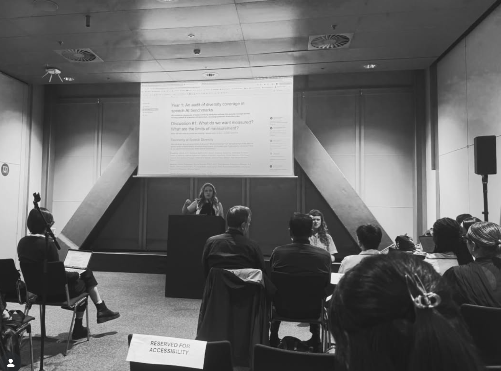
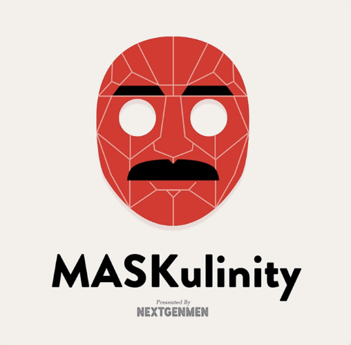
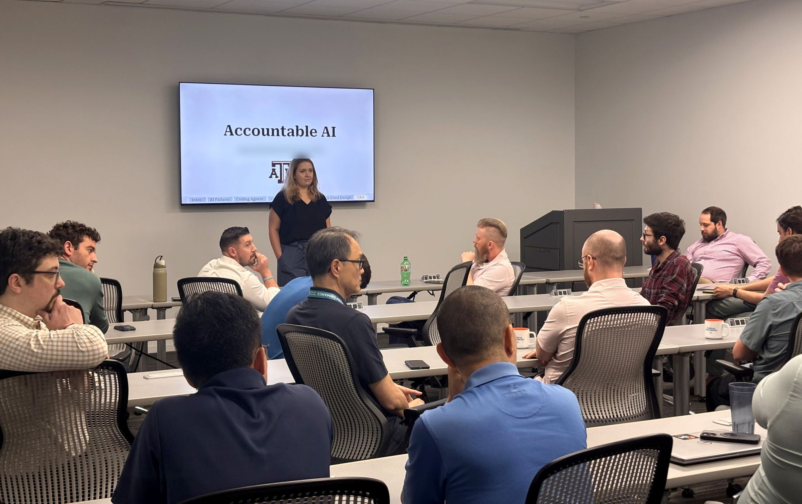

Speaking
Everything I speak about comes out of my research on Socially Robust AI — how people actually speak, who they are, and the sociopolitical institutions around them.
Research talks
Department seminars, lab visits, colloquia, guest lectures — I'd love to come talk about my work, and hear about yours! Just email me the event and date.
Invite Me to SpeakStudents & outreach
Student orgs, clubs, K–12, community groups — no AI background needed! These are some of my favorite talks to give, so please reach out.
Invite Me to Your GroupMedia & general public
Press interviews, podcasts, public events — I love translating AI research for a wider audience. Email me with your outlet and your deadline!
Media InquiryCompanies & organizations
Talks and workshops for companies are paid engagements. Tell me what you need, who's in the room, and your timeline, and I'll follow up with details.
Get in TouchTalks
Socially Robust AI
My research program end to end: methods, benchmarks, and audits for AI robustness in socially complex situations — across how people speak, who they are, and the structures around them.
Is AI Robust to How People Actually Talk?
Real speech is full of “um”s, restarts, and slips of the tongue — and today's speech and language systems often break on it. What goes wrong, and how to test for it.
Who Does AI Work For?
Why voice assistants and chatbots work better for some people than others — and how your accent, gender, and way of talking shape how AI treats you.

I talked about this on the MASKulinity Podcast Listen
Accountable AI
Move too fast and you skip the guardrails; move too slow and you miss the upside. This talk is about the middle: where AI strengthens a process, and when to keep a human-in-the-loop.
“Grateful to Maria for a talk that actually changed how we're thinking, not just what we're thinking about.” — Alyssa Franklin, CEO, IPT Global IPT Global builds safety-critical software that verifies oil and gas well integrity, where a missed failure can mean a blowout.

The Other AI: An Intuitive Understanding of AI
How do tools like ChatGPT actually work? A no-background-needed tour of what these systems can and can't do.

How Does AI Work? & My Research
A friendly walk through how language models work, plus what a PhD in this area actually looks like day to day. I love doing these for student groups.
“She was very approachable and amazing at detailing her work and explaining it in a way that anyone could understand. I have personally worked very little with AI and understanding how it works, so her talk was very informative and one of the most memorable we've had.” — Vivian Combs, President, C.A.F.E.
“Maria is extremely passionate about her research and about introducing graduate school to others. She is very motivated to help other people and cares about others success.” — Alyssa Garabedian, Vice President, C.A.F.E.